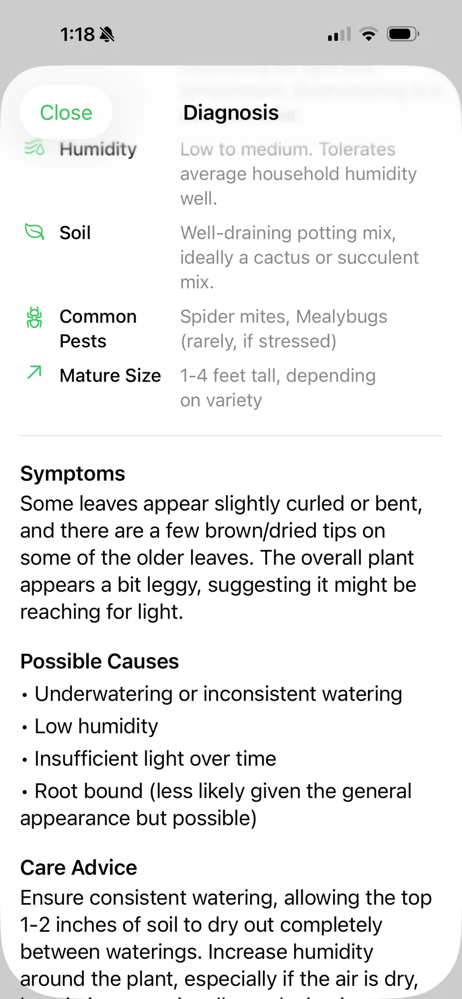
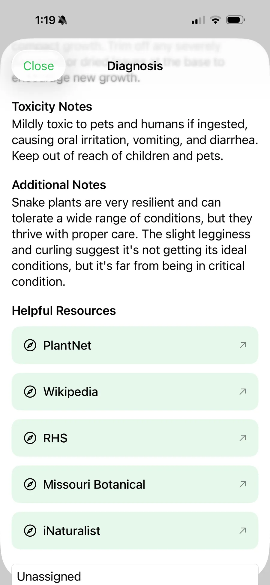
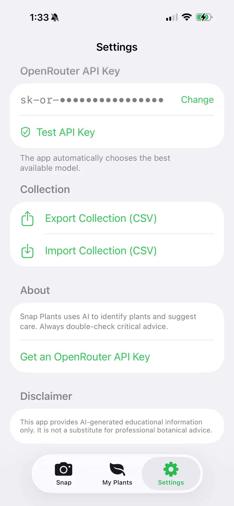

Indoor
Houseplants on the sill. Snap the leaf, save the care notes, and remember which pot is which before you overwater it again.
iOS + Android · In beta
Identify. Collect. Trade.
Photograph a plant. Pick a category. Get assistive ID, a care snapshot, and toxicity notes. Save it to My Plants, then trade with other plant parents — on iPhone and Android.
iOS and Android in beta · Assistive ID, not a botanist · Peer-to-peer trades · Your collection stays yours


Who it’s for
Indoor parents, outdoor gardeners, succulent collectors, and traders share the same shelf. Categories change the hint. The honesty does not: ID is assistive.
Houseplants on the sill. Snap the leaf, save the care notes, and remember which pot is which before you overwater it again.
Outdoor plants, trees, shrubs, herbs, vegetables, wildflowers. Tag the bed. Lookup links when you want a second opinion.
Thick-leaf plants and cacti. Confidence scores and lookalike notes so you can argue with the result, not a shopping blog.
Post from inventory, browse the feed, chat in-app. Swaps are between plant parents. Snap Plants does not insure them.
What ships
Photograph one plant, or pick from the gallery. Categories are optional hints — the photo is what gets identified.
Suggested name, scientific name, confidence. Care snapshot. Toxicity notes. Lookup links. Learning and reference. Not a botanist.
Symptoms, possible causes, care advice. Android also splits Identify, Diagnose Issue, Toxic Check, and Weed ID.
A list and a shelf of what you actually own. Filter All, Wishlist, or Selling. Notes and location tags live on the plant.
Post an offer from inventory, browse the feed, open detail, chat. Contact details are yours to share.
Cloud backup and restore while signed in. Export and import CSV where the app supports it. A new phone should not wipe the shelf.
Identify Live
Houseplants, succulents and cacti, outdoor garden plants, trees and shrubs, herbs, vegetables, wildflowers, or not sure. Categories narrow the hint. The photo still does the work.
You get a suggested name, scientific name, confidence, a care snapshot (light, water, humidity, soil), toxicity notes, and lookup links — PlantNet, Wikipedia, RHS, Missouri Botanical, iNaturalist. If the match is uncertain, treat it as a starting point.


Collection Live
More than an identifier. A personal collection with search, wishlist, and selling filters.

Honest ID
AI identification is assistive — for learning and reference. It is not a substitute for a professional botanist, horticulturist, or veterinarian. Confirm anything about edibility, toxicity, or disease before you act.
Trades Live
Pick a plant you already logged. Post the offer. Browse the feed. Open detail. Message.
Trades are peer-to-peer between plant parents. Snap Plants does not insure, escrow, ship, or take payment. Contact details — username and optional Facebook helpers — are information you choose to share.
How it works
Open the camera or pick a gallery photo. One plant, fill the frame. Crop if you have to. Four plants in one shot will lie to you.
Optional chips: houseplants, succulents, outdoor, trees, herbs, vegetables, wildflowers, not sure. Review confidence, care, toxicity, and lookups.
Add notes and a location tag. Flag wishlist or selling. See it on the shelf. The values you type are yours.
Post from inventory, browse the feed, chat in-app. The swap is between you and the other plant parent.
Sign in. Sync or export CSV. A future beta should not be the reason the shelf disappears.
Account Live
Scan and journal without an account. Sign-in unlocks backup, restore, and trades. An optional OpenRouter key lives in Settings — the app can use a default until you add your own. Identification remains educational. The disclaimer in Settings says so out loud.

FAQ
What Snap Plants does — and what it does not claim.
Identification is assistive and can be wrong. Photo quality, lighting, and similar-looking species all affect results. Use the lookup links, and always verify important decisions — especially edibility or toxicity — with trusted sources or a professional.
You can scan and journal without an account. Sign in with Apple (iOS) or Google (Android) unlocks cloud backup, trades, and account features. Stay signed in if you want the shelf to follow you to a new phone.
Houseplants, succulents, outdoor, trees, herbs, vegetables, or wildflowers help focus identification. Use Not Sure when you are not sure. The photo is still what gets identified. On Android you can also choose Identify, Diagnose, Toxic Check, or Weed ID first.
Trades are peer-to-peer between users. Post offers, pick a plant from inventory, browse the feed, open detail, and chat in-app. Snap Plants does not insure, ship, or process payments.
Photographing plants for identification, diagnosis, and your collection journal. Not unrelated uses.
Google Play internal testing does not email testers automatically. After you request Android beta, this site shows the Play test URL. Copy it and keep it. The URL becomes active once your email is added to the tester list — please allow up to a few hours.
Ownership
Camera and photos are used for plant identification and the collection journal. Trade contact details are information you choose to provide. Sign-in is for account features like backup and trades.
Photos support ID, diagnosis, and journaling. They are not a general-purpose social feed.
iOS uses Sign in with Apple. Android uses Google. Cloud backup requires an account.
Username and optional Facebook helpers are user-provided so other plant parents can reach you.
The beta form sends App name, phone OS, and email to admin@snapcollectibles.com. Nothing else.
Beta
Request a tester slot. We get App name, phone OS, and your email — nothing else. Android testers must copy the Play test URL on the next screen. Google will not email it.
Android tester link
This URL will be active once your email has been added to the tester list. Please allow up to a few hours. The Google Play interface does not auto-send emails to testers.
Request received. You confirmed you copied the link.
Android tester link
This URL will be active once your email has been added to the tester list. Please allow up to a few hours. The Google Play interface does not auto-send emails to testers.
Request email:
You cannot dismiss this until you check the box. Google will not email you this link.